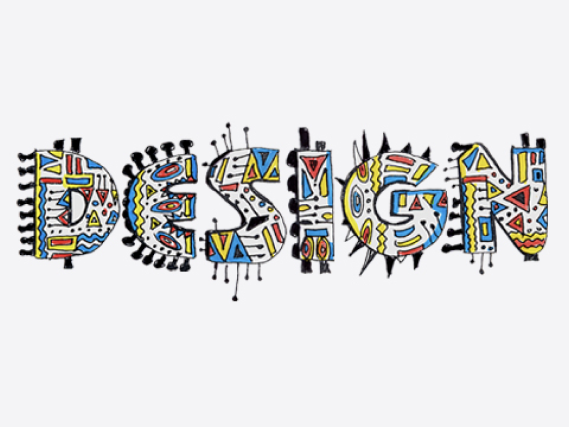
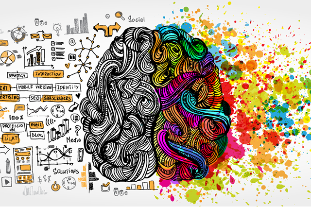
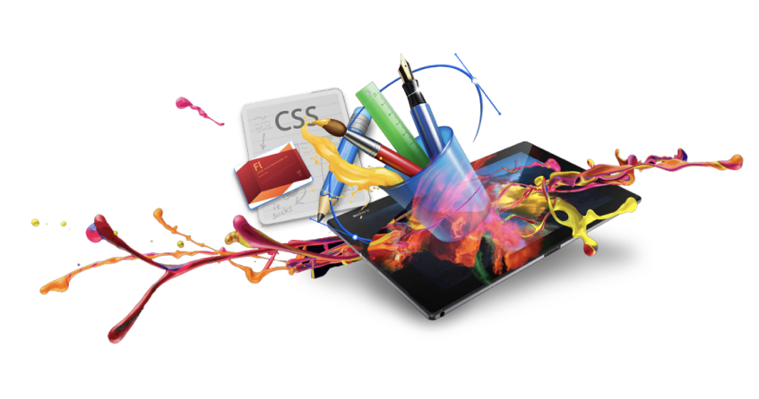

В первом модуле у нас было четыре новых предмета:
На этом предмете нам показали, как создавать веб - страницы. Мы изучили суть языков разметки HTMl и CSS, научились позиционировать элементы. Система обучения у нас очень удобная - все уроки записываются и выкладываются в YouTube и на hack.exchange.

Безопасность жизнедеятельности - обязательный курс учебного плана всех первокурсников Вышки.Все подключены к БЖД в своем аккаунте в LMS. Мы прослушали много информации про ресурсы Вышки на лекциях, познакомились с менторами и кураторами среди студентов. Нам дали данные для входа на ресурсы, мы получили студенческие билеты.

На креативном проектировании мы изучаем графический дизайн. Делали мудборды, флаги, графические образы и брендинг. Преподаватель всегда помогала нам во всех вопросах, комментировала работы и давала советы по улучшению.
 На футурологии нам рассказывали о том, как создавать
стартапы. Где брать инвестиции,
как продумывать
работу проекта. Мы обсуждали большие данные,
искусственный интелект
и машинное обучение.
Хоть мне и потребовалось время, чтобы привыкнуть, стало все интереснее. Получилось открыть для себя много нового, как в дизайне, так и в программировании. Полученные знания пригодились. И, кроме того, удалось познакомиться с новыми ребятами.
